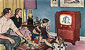

|
Autoevaluador
Enlaces
Bibliografía |
Historia mundial de la TV > 1.4 La "colorida" expansión mundial
1.4 La "colorida" expansión mundial
Los años 50 han sido calificados por muchos analistas como aquellos del “gran salto de la televisión en el mundo”, puesto que es entonces cuando los servicios regulares de televisión se extendieron gradualmente por las grandes urbes del mundo.
Así, por ejemplo, México y Brasil contaron con una programación regular a partir de 1950; Holanda y Argentina, al año siguiente; Italia, Alemania Oriental y Venezuela, hacia 1952; Bélgica, Dinamarca, Polonia, Checoslovaquia y Canadá, en 1953; Austria, Luxemburgo y Mónaco, en 1955; España y Suecia, en 1956; Portugal, un año más tarde; y, Suiza, Finlandia, Yugoslavia, Hungría, Rumania y China, en 1958.
En la gran mayoría de los casos la cobertura geográfica de las televisiones era muy pequeña (de carácter local diríamos hoy día), y eran pocas las horas del día en que se transmitían imágenes. Asimismo, la presencia del televisor en los hogares no estaba extendida; a cambio, distintos lugares públicos -como los bares- servían de escenario de encuentro a los telespectadores.
Frente a este panorama, gobiernos y empresarios dedicaron esfuerzo e imaginación, a construir redes nacionales de televisión hertziana. Para ello se instalaron nuevas emisoras, postes repetidores y líneas de cables. Las grandes distancias y los accidentes topográficos debían rendirse ante un sistema planificado.
Por ejemplo, en Francia, el Gobierno lanzó, en 1954, un plan nacional quinquenal que contempló el emplazamiento de 45 transmisores de televisión. El plan tuvo su razón de ser en el bajo porcentaje de hogares con televisor (en 1953, sólo 60.000 aparatos) y en la falta de cobertura de todas las regiones del “hexágono”.
Sin embargo, un país se destaca por la conformación de una poderosa industria televisiva: EEUU. Hacia 1952 se calcula que unas 108 emisoras estadounidenses alimentaban las pantallas de unos 21 millones de televisores.
Al ritmo que crecía el número de emisoras y televisores se disparaba la publicidad que explotaba este nuevo medio. Las cifras son reveladoras: de una inversión publicitaria de un poco más de 10 millones dólares, en 1950, se pasó a 1.500 millones, en 1960. A comienzos de los años ’50 la diferencia entre los EEUU y el resto de los países desarrollados era notoria. Durante los primeros meses de 1952, en Gran Bretaña sólo se habían vendido 1,2 millones de televisores, en Francia cerca de 10.558, y en la entonces Alemania Federal apenas se contabilizaban tan sólo 300 aparatos.
El encanto de la televisión comenzaba a causar furor en otras culturas. En Japón, la televisión pública, la NHK (Japan Broadcasting Corporation), comenzó a operar en 1953 y al año siguiente hizo lo propio la primera estación comercial.
Un importante avance técnico registrado fue la incorporación del color a las transmisiones televisivas. Las grandes compañías estadounidenses fueron las primeras en proponer un sistema de televisión color: el NTSC. Con la aprobación de la FCC, EEUU se convirtió, en 1953, en el primer país en contar con televisión color. Hoy el NTSC está en funcionamiento en los EEUU, Canadá y Japón, entre otros países.
Posteriormente en Europa se puso en marcha una serie de investigaciones para perfeccionar el sistema estadounidense. Los resultados de éstas dieron lugar a dos sistemas de televisión color. En 1959, el Gobierno galo puso en marcha un sistema denominado SECAM; mientras que en Alemania Telefunken- ideó el sistema PAL (en 1963. Así las cosas, como indican Albert y Tudesq (2001), “en los años 1962-1965, los países de Europa no supieron elegir un sistema único y hoy en día, si el PAL ha ganado el mercado de los principales países europeos occidentales, el SECAM se ha impuesto en los países del Este, en numerosos países del cercano Oriente, en algunos países de América Latina y en África francófona”.


Familia estadounidense "unida y feliz"
frente al televisor.
© www.internetcampus.com/
frtv/frtv024.htm